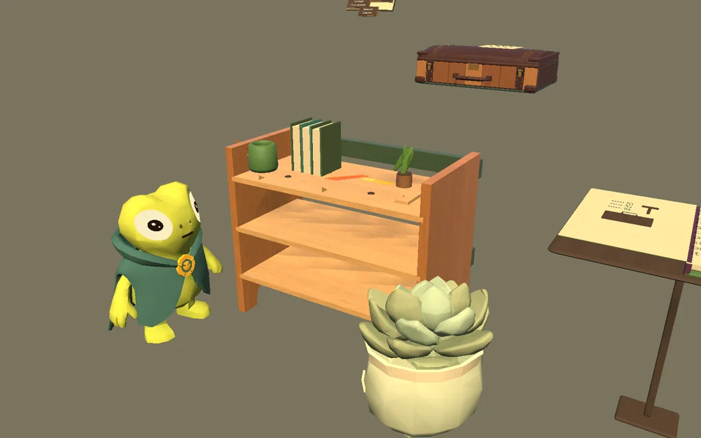
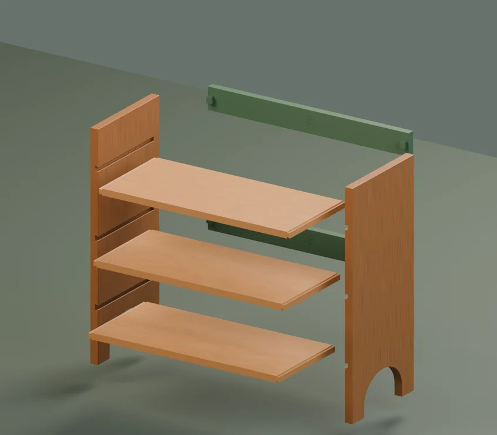
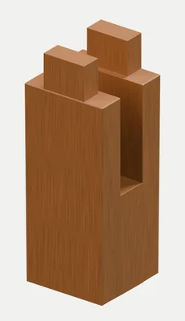

Sprout
Gentle gestures and patient pauses. Sprout tends leaves and turns the cup handle away from them to make a little room.

Mixed reality game · Meta Quest 3 · Unity / OpenXR
Five miniature residents arrive in a second-hand suitcase with their furniture in pieces. You rebuild their belongings at a fold-out workbench, then place them in your own room for the residents to use.
Archivist wants to reach a book. Sprout needs space for leaves. Their reading shelf gives the player a reason to fit the wooden joints and a choice about how its owners will share the finished piece.


Each of the six core restorations adds an activity to the room. Placing all six brings the household together for an invitation to stay. Four more pieces become available afterwards.
I studied 34 Chinese joinery structures and variants to decide what players could infer from the wood itself. I modelled three assemblies in Blender and tested 21 insertion paths across their 30 parts. The shelf has seven parts and shows why order matters.


The manual keeps the finished shelf on the left and isolates the next joint on the right. Players can rotate either view, replay the insertion or look through a side panel without advancing their build.

When a part counts as fitted. Its supports must be in place, the joint empty and the approach path clear. Releasing the part near the correct angle completes the fine alignment. The player still has to choose the part, find the opening and fasten it.
Tools sit to the left of the turntable and pigments to the right. The process board holds the current instruction while both hands are busy. Unlocking the turntable brings the next joint within reach.

A split in the wood calls for a clamp, drill and peg. After the peg is seated, the player saws it flush and sands the surface. Choose a tool to see its working end and the step where it is used.

A playtester with less strength in their left hand found sustained gripping tiring. I added a stand so they could position the drill, let go and turn the crank with the same hand.
For seated play, the tool cabinet tilts from 16° to 70° and the instruction board moves down to the centre. Both layouts use a 38 cm reference reach.


The player grips the restored furniture, turns it and releases it in the room. If the new pose overlaps a resident, another piece or a known obstacle, the furniture returns to the workbench. A local anchor keeps its placement between sessions.
Rotate a piece beside its in-game capture. Select the bench to separate its six parts.
3D model

In the room · Unity Editor

I used Qwen3 VoiceDesign to synthesize five readings of the same phrase. I edited them into wordless syllables, keeping each resident’s stresses and pauses. Unity selects a take for the character and their intention, then samples its loudness every 10 milliseconds to animate the mouth.
Listen to the five residents. Sprout · Keeper · Archivist · Courier · Page
Gentle gestures and patient pauses. Sprout tends leaves and turns the cup handle away from them to make a little room.
Keeper checks the alignment of the wood before a reassuring nod. At tea, a small sip brings the drink back down to a familiar fill mark.
One hand supports the book while the other turns the page. Archivist marks the place before sipping and finds it again after a cup mix-up.
Open gestures give way to a sudden pause. Courier retrieves offcuts, shares music and shows the player how to grip his own cup.
Small gestures stay close to the body. Page keeps familiar wood and belongings, and will lend the old cup sleeve when the player asks.
A finished piece can turn, move into the room and return in a later session. I tested how Unity keeps the brush marks attached, how often contact checks rebuild geometry, and how much texture memory the wood needs.



The leg above shows how an opening interrupts a solid face. A separate 23,056-triangle wall-contact test checked two candidates in the forward query and three in reverse.
Across eight repeated rounds, the test reused the cached face bounds without computing new ones.


One paint mesh per piece holds up to 3,200 brush samples. Laying new paint appends and uploads marks. An unchanged piece reuses its mesh, and a moved part reprojects its marks so openings stay clear.


The wood keeps a 2K colour map with 1K normal and finish maps. At the base mip level, the three maps require an estimated 2.68 MiB in ASTC 6 × 6, compared with 24 MiB in RGBA32.
Meta Quest 3 · Unity · OpenXR
I led furniture and prop development, character direction and Unity integration, with AI-assisted implementation. The character models use source packages with project-specific mesh, performance and contact work. The gameplay footage is from the Unity Editor.